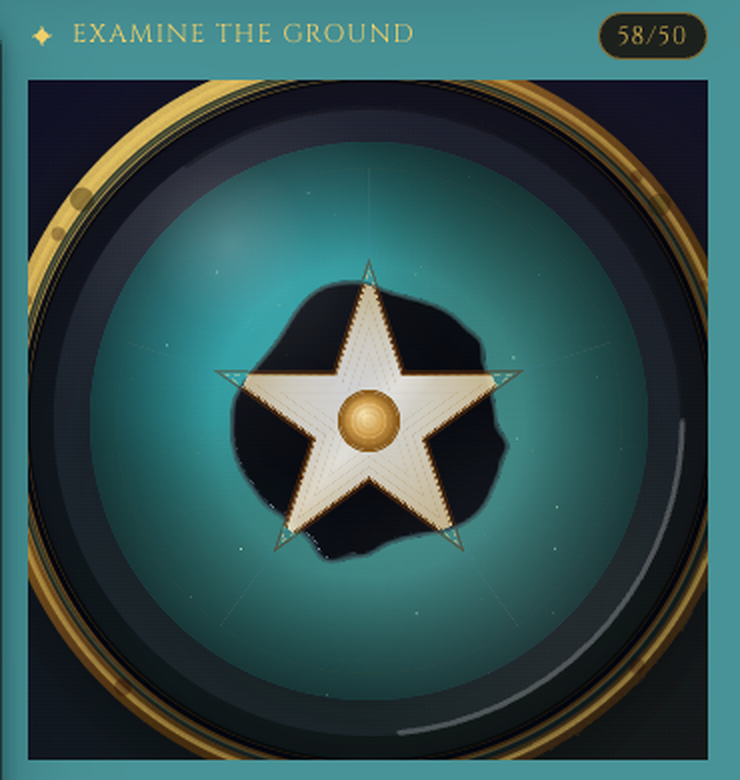
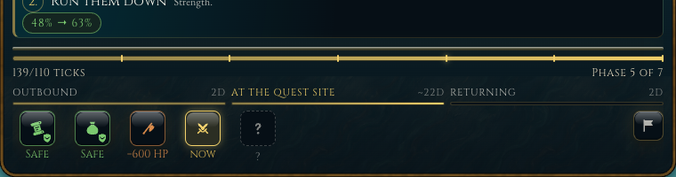
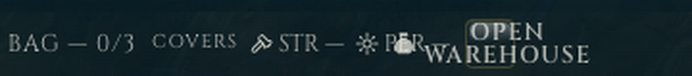
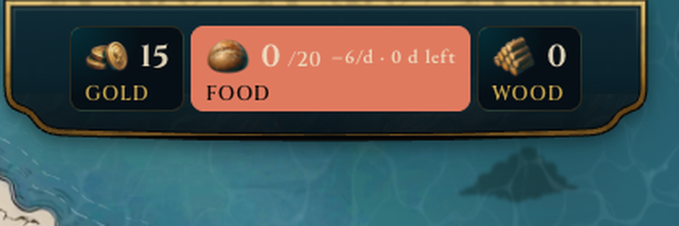

SC-1 · Skill check: il quadrante e il comando di lancio
Oggi il quadrante è più grande del riquadro (tagliato su 4 lati). Il comando di lancio è la stella al centro, senza etichetta, e compare dopo 4.1 s di intro senza istruzioni. Le due direzioni risolvono il taglio allo stesso modo (quadrante = lato minore del riquadro) e differiscono su come si chiede il gesto.
Baseline

A · Stella che chiede il gesto
B · L'intro finisce con l'istruzione
| Asse | A | B |
|---|---|---|
| Affordance (si capisce che va cliccato) | esplicita, sempre | dipende dalla lettura |
| Fantasia / regola 6b | etichetta incisa: ammessa | nessun elemento UI aggiunto |
| i18n / testi lunghi | una parola | una frase per check (copy da scrivere) |
| Costo | basso | medio (testi authored) |
SC-2 · Dopo il verdetto: niente fotogrammi morti
Oggi il loop si parcheggia 0.7 s dopo il verdetto (gate BV-04 settledIdle) e i raggi restano fermi a metà spazzata, accanto a una scena viva. Entrambe le direzioni mantengono un costo di ridisegno basso; nessuna aggiunge un «Continua» (ruling r003).
Baseline

A · Idle vivo e leggero
Bare heels in the damp earth…
Stealth bonus on the next approach.
B · Il quadrante si sigilla
Bare heels in the damp earth…
Stealth bonus on the next approach.
| Asse | A | B |
|---|---|---|
| Percezione di vita | continua | chiusa, poi quiete |
| Gate battezzati | tocca BV-04 (ruling) | compatibile |
| Attenzione sulla carta dell'esito | il moto distrae | il quadrante si fa da parte |
| Reduced-motion | statico | statico |
QW-1 · La barra in basso: cosa vuol dire «piena»
Il tuo intento (R-231 #4): la barra si riempie per tutta la durata della quest, con checkpoint per fase. Oggi è trascorso / durata dichiarata con tetto: piena alla fase 4 di 7 (run lenta), oppure torna indietro e chiude al 95% (run veloce). Le 6 tacche sono a sesti uguali, le fasi sono 7. Prova i tre momenti.
Baseline

A · Barra di fasi
B · Tempo reale che si allunga
| Asse | A | B |
|---|---|---|
| Fedeltà al tuo testo «2 min → 2 min» | no: misura avanzamento | sì: misura tempo |
| Mai piena prima della fine / mai all'indietro | garantito | sì, con la compressione |
| Leggibilità a colpo d'occhio | «dove sono» | «quanto manca» |
| Costo | basso | medio (scala dinamica) |
PL-3 · Il pulsante che apre il magazzino
Oggi «OPEN WAREHOUSE» ha un'area cliccabile di 26×26 px e un'etichetta più larga, che trabocca e copre «PER» nella riga della bisaccia.
Baseline

A · Icona + tooltip
B · Pulsante a tutta riga
| Asse | A | B |
|---|---|---|
| Scopribilità | media | alta |
| Budget altezza AC-02 (≤540 px) | 0 px | +44 px |
| Coerenza HUD | come abbandono | nuovo bottone |
HUD-1 · Il cibo che finisce
Oggi la tessera cibo è corallo pieno (contrasto 2.26:1), piatta, e accesa dal giorno 1-2 in tutte le run. Due modi di dire «allarme» senza rompere la regola sui metalli opachi.
Baseline

A · Brace sulla tessera scura
B · Corallo con inchiostro
| Asse | A | B |
|---|---|---|
| Urgenza percepita | media | alta |
| Guida HUD (no flat, metalli opachi) | rispettata | tessera piatta |
| Contrasto | ≥ 4.5 | ≥ 4.5 |